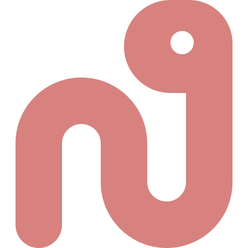

<template><style>
@font-face{font-family:Departure;src:url("../assets/fonts/DepartureMono-Regular.woff2")}@font-face{font-family:Dank;src:url("../assets/fonts/DankMono-Regular.otf")}*{box-sizing:border-box}html,body{margin:0;width:1920px;height:1080px;overflow:hidden;background:#faf4ed;color:#464261}main{width:100%;height:100%;display:grid;place-items:center;font-family:Dank,monospace;position:relative}.lockup{text-align:center}.title{font:104px/1.12 Departure,monospace;letter-spacing:-.055em;margin:0}.title span{color:#b4637a}.url{font:42px Departure,monospace;color:#286983;margin-top:42px}.worm-card{position:absolute;left:156px;bottom:142px;width:166px;height:166px;border:4px solid #464261;border-radius:34px;background:#fffaf3;box-shadow:14px 14px 0 #ea9d34;display:grid;place-items:center}.worm-card img{width:116px}.line{position:absolute;left:320px;right:144px;bottom:206px;height:8px;background:#286983;transform-origin:left;opacity:.28;border-radius:999px}.dot{position:absolute;right:124px;bottom:178px;width:62px;height:62px;border:5px solid #464261;border-radius:50%;background:#907aa9}
</style><main data-hf-id="hf-oftv" id="outro" data-composition-id="outro" data-width="1920" data-height="1080"><div data-hf-id="hf-6jvi" class="lockup"><h1 data-hf-id="hf-qtsz" class="title">Consume less.<br data-hf-id="hf-x5px"><span data-hf-id="hf-h7e0">Create more.</span></h1><div data-hf-id="hf-w7ys" class="url">gil.dev</div></div><div data-hf-id="hf-rlgo" class="worm-card"></div><div data-hf-id="hf-np12" class="line"></div><div data-hf-id="hf-lu65" class="dot"></div></main><script>
const tl=gsap.timeline({paused:true});window.__timelines["outro"]=tl;
tl.fromTo(".title",{opacity:.25,y:55,scale:.94},{opacity:1,y:0,scale:1,duration:.62,ease:"back.out(1.55)"},.06)
.fromTo(".url",{opacity:0,y:18},{opacity:1,y:0,duration:.38,ease:"power3.out"},.58)
.fromTo(".worm-card",{opacity:0,x:-100,rotation:-12},{opacity:1,x:0,rotation:0,duration:.62,ease:"back.out(1.8)"},.42)
.fromTo(".line",{scaleX:0},{scaleX:1,duration:1.18,ease:"power2.inOut"},.72)
.fromTo(".dot",{opacity:0,scale:.3},{opacity:1,scale:1,duration:.38,ease:"back.out(2)"},1.72);tl.seek(0);
</script></template>
